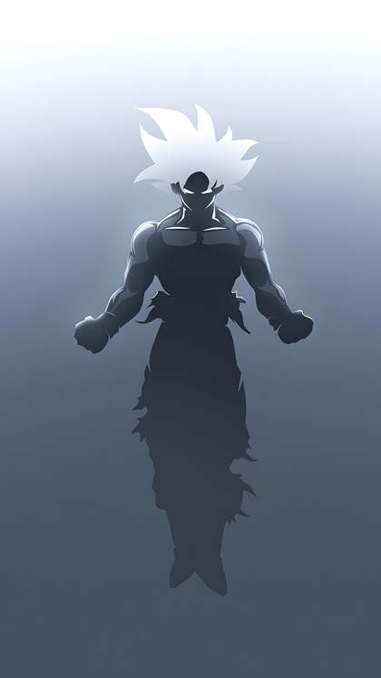
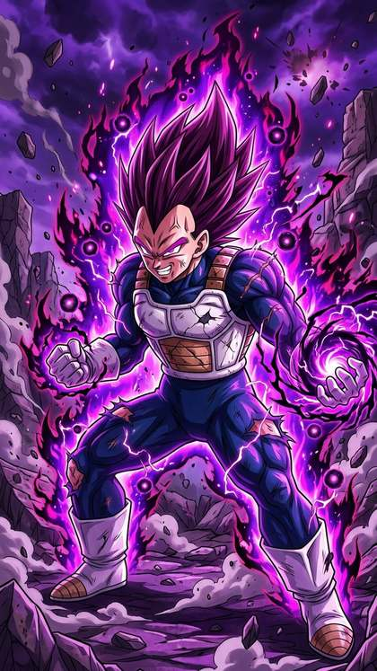
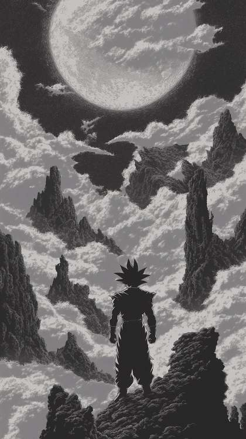
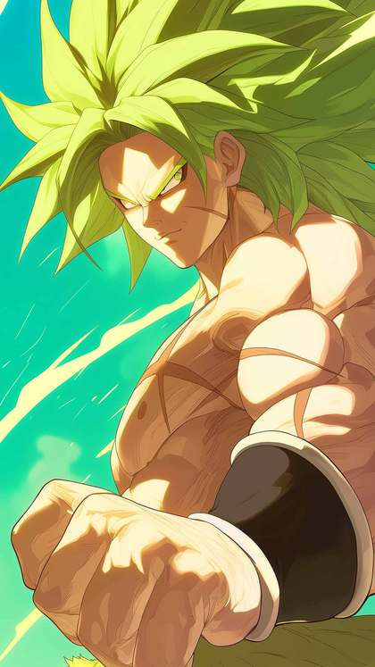

Dragon Ball Super: Beerus — Premiere Date, Cast, Themes and Everything Confirmed

Last updated: 8 October 2026
Dragon Ball Super: Beerus is an upcoming anime edition arriving this month, and it is being presented as an "ENHANCED" experience with powerful, immersive visuals. In Japan it premieres on Sunday, 11 October 2026, with broadcasting and streaming beginning that same month. The project has already drawn attention through a "Super Surge" visual and a "Super Surge" trailer, both of which introduce new characters that threaten the fate of Earth. This article collects only what has been confirmed so far — the premiere window, the staff, the theme songs, and the event where fans will get to see the first episode early.

Key facts at a glance
The table below gathers the essentials that have been confirmed for Dragon Ball Super: Beerus, from the premiere date to the staff and the theme songs.
| Detail | Confirmed information |
|---|---|
| Premiere date | Sunday, 11 October 2026 in Japan; broadcasting and streaming begin that month |
| Format | An "ENHANCED" edition with powerful, immersive visuals |
| Opening theme | "ONOGAMI" by MEGATERA・ZERO |
| Ending theme | "Kan Peki No Peki" by VK Blanka |
| Original work, story and character design | Akira Toriyama |
| Composition and direction arrangement | Matsuto Seya |
| Animation character design and general animation director | Tadayoshi Yamamuro |
| Editing | Eichi Nishimura |
| Compositing director | Yosuke Motoki |
| Music | Norihito Sumitomo |
| Special event | "Dragon Ball Super: Beerus SPECIAL PANEL" at New York Comic Con 2026, Thursday 8 October |
What "ENHANCED" and the Super Surge visual mean
Dragon Ball Super: Beerus is described as an "ENHANCED" edition, and the wording points to a presentation built around powerful, immersive visuals rather than a plain re-broadcast. That is the extent of what has been confirmed about the format so far. No further technical detail about what the enhancement involves has been announced, so it is best to treat the description as the official framing rather than a full specification.
Alongside that description, a "Super Surge" visual and a "Super Surge" trailer have both been revealed. According to the confirmed material, they feature new characters that threaten the fate of Earth. That is the only story information attached to the project so far: there is no confirmed episode count, no full plot synopsis, and no cast breakdown beyond the names listed for the North American panel. Where details have not been announced, this article leaves them out rather than filling the gaps with speculation.

Themes and the artists
The music side of the project is already set. The opening theme is "ONOGAMI" by MEGATERA・ZERO, and the ending theme is "Kan Peki No Peki" by VK Blanka. Score music for the series is handled by Norihito Sumitomo, whose name appears in the confirmed staff list.
Theme songs are often among the first elements a production reveals, and here both the opening and the ending are already attached to the project. For viewers following the Japanese broadcast, these two tracks will bookend each episode as it airs. The staff list also places Akira Toriyama as the source of the original work, story and character design, with Matsuto Seya credited for composition and direction arrangement. Tadayoshi Yamamuro is listed for animation character design and as general animation director, while editing is credited to Eichi Nishimura and compositing direction to Yosuke Motoki.
Taken together, the credits describe a production assembled from names long associated with Dragon Ball animation and music. The confirmed material does not go further into how the themes relate to the story, so the songs are best understood for now simply as the announced opening and ending for the edition.

New York Comic Con premiere screening and panel
New York Comic Con 2026 runs in New York from 8 to 11 October 2026, and it hosts a "Dragon Ball Super: Beerus SPECIAL PANEL". The panel takes place on Thursday 8 October, from 12:00 to 12:45pm local time, on the Empire Stage at the Javits Center.
The session includes a world-premiere advance screening of the first episode, making it the earliest confirmed opportunity for fans to watch the opening instalment ahead of the Japanese broadcast. The panel is hosted by Monica Rial, the English dub voice of Bulma. She is joined by guests Jason Douglas, the English dub voice of Beerus, and Ian Sinclair, the English dub voice of Whis.
Attendees at the panel receive giveaways: a Dragon Ball Super: Beerus Big fan chain, a face towel, and a Dragon Ball Super Card Game Fusion World Energy Marker. Because the panel falls three days before the Japanese premiere, it effectively opens the project's rollout for a North American audience.

How to watch and what to expect
Dragon Ball Super: Beerus premieres in Japan on Sunday, 11 October 2026, with broadcasting and streaming beginning that month. The edition also appears in October 2026 anime release listings, which line up with the confirmed 11 October window. Anyone planning to follow the series should expect it to arrive through Japanese broadcast and streaming during October 2026.
For those attending New York Comic Con 2026, the advance screening on Thursday 8 October is the first confirmed chance to see the opening episode. For everyone else, the rollout begins with the Japanese premiere a few days later. Beyond the premiere window, the "ENHANCED" framing, the theme songs and the Super Surge visual, further specifics — including episode counts and detailed story information — have not been announced. It is worth watching for additional confirmed material as the release date approaches rather than relying on unverified reports.
Frequently asked questions
When does Dragon Ball Super: Beerus premiere?
It premieres in Japan on Sunday, 11 October 2026. Broadcasting and streaming begin that month, and the edition also appears in October 2026 anime release listings, confirming the 11 October window.
Who is behind the series?
The confirmed staff list credits Akira Toriyama with the original work, story and character design; Matsuto Seya with composition and direction arrangement; Tadayoshi Yamamuro with animation character design and as general animation director; Eichi Nishimura with editing; Yosuke Motoki with compositing direction; and Norihito Sumitomo with music.
Can fans see the first episode early?
Yes, for attendees at New York Comic Con 2026. The "Dragon Ball Super: Beerus SPECIAL PANEL" on Thursday 8 October, from 12:00 to 12:45pm local time on the Empire Stage at the Javits Center, includes a world-premiere advance screening of the first episode.
What are the theme songs?
The opening theme is "ONOGAMI" by MEGATERA・ZERO, and the ending theme is "Kan Peki No Peki" by VK Blanka.